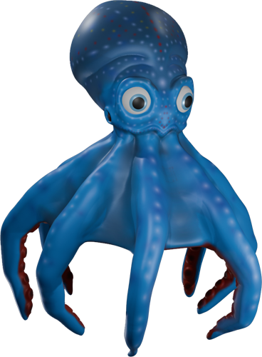

Créations artisanales d'articles uniques en cuir tannage végétal
Auto-entrepreneur en maroquinerie, depuis plus de 10 ans avec Au Cuir Du Lion (ACDL), je crée des pièces uniques entièrement
faites main : sacs, portefeuilles, ceintures, fourreaux, accessoires personnalisés etc.
Chaque création allie savoir-faire artisanal, matériaux de qualité et design
contemporain.
Poser un pont entre ce qui a été fait par le passé et ce que nous pouvons créer aujourd'hui.
Favoriser la qualité à la quantité et le contact humain. Voilà comment s'anime mon travail, avec comme ligne de conduite l'éthique, le respect de la nature et de l'humain.
J'utilise et affectionne tout particulièrement le cuir bovin, ovin ou caprin en tannage végétal d'origine France. J'utilise aussi une gamme de teinture, peinture et produits de finition à base aqueuse, donc sans solvant, de la marque EcoFlo,
ainsi que la quincaillerie sans nickel. Et d'autres produits d'origine naturel comme la graisse ou la cire d'abeille. Garantissant l'absence,
autant que faire ce peut, d'allergènes et de polluants. Ce qui, éthiquement parlant, me convient et me correspond totalement.
Au milieu d'un monde où la quantité jetable prévaut bien trop souvent à la qualité robuste,
je m'inscris dans une optique de qualité. En effet, j'ai toujours été soucieux du travail bien fait, peaufiné. Et par le travail du cuir, j'apporte aussi à cette attention des matériaux de qualité.
N'hésitez pas à me contacter pour vos projets sur-mesure.